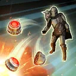
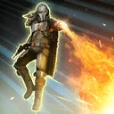
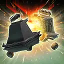
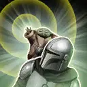

The Mandalorian and Grogu
A dynamic duo who causes chaos no matter where they go, with The Mandalorian's explosive attacking power and Grogu's support
A dynamic duo who causes chaos no matter where they go, with The Mandalorian's explosive attacking power and Grogu's support
Requires 100% Ultimate Charge to activate
Ultimate Charge: Gain 2% Ultimate Charge whenever a New Republic ally counterattacks, inflicts Retaliate damage, or Provoked enemy counterattacks. Gain 5% Ultimate Charge whenever a New Republic ally gains Dramatic Entrance, and gain 10% Ultimate Charge whenever an enemy is defeated while inflicted with On the Run.
Deal Physical damage to all enemies and dispel all debuffs on all allies, and all New Republic allies recover 100% Health and Protection. All other New Republic allies gain a bonus turn, their cooldowns are reset, and they gain 50% Mastery and Offense for the rest of the encounter.
The next time On the Run is reset on an enemy (excluding Galactic Legends and Raid Bosses), they're instantly defeated and The Mandalorian and Grogu gain a bonus turn. Enemies (excluding Galactic Legends and Raid Bosses) who are immune to Instant Defeat effects instead have their Protection disabled and are inflicted with Healing Immunity which can't be dispelled or prevented, and they lose 50% Defense, Offense, and Speed for the rest of battle.
This attack can't be countered or evaded.
Deal Physical damage twice to target enemy. Gain Retribution for 2 turns and 10% Offense (stacking) for the rest of the encounter.
When attacking during the enemy's turn: Gain 10% Turn Meter for each critical hit scored.
When used during The Mandalorian and Grogu's turn: Inflict 2 stacks of On the Run for the rest of the encounter, which can't be dispelled or resisted. If The Mandalorian and Grogu is the ally in the Leader slot, gain 50% progress towards The Mandalorian and Grogu's Contract.
If The Mandalorian and Grogu used Force Splinter on the same target enemy last turn, inflict Fear for 1 turn, which can't be dispelled, evaded, or resisted.

Deal Physical damage to all enemies and inflict Provoked for 2 turns, which can't be dispelled. Inflict 2 stacks of On the Run to all enemies for the rest of the encounter, which can't be dispelled or resisted, and all New Republic allies gain 2 stacks of Heal Over Time for 1 turn, and Retaliate for 2 turns, which can't be dispelled.
New Republic allies gain bonuses based on their role:
- Attackers: Gain Offense Up and Retribution for 2 turns
- Healers and Supports: Their cooldowns are reduced by 1 and they gain Deflective Ward for 1 turn or until they take damage
- Tanks: Dispel all debuffs on themselves, and gain Potency Up and Taunt for 2 turns

Deal Physical damage to all enemies and an additional instance of damage to the target enemy. Inflict Burning on all enemies for 2 turns and inflict 5 stacks of On the Run to target enemy for the rest of the encounter, which can't be dispelled or resisted. Enemies who were already Burning are instead inflicted with Armor Shred until the end of battle, which can't be resisted.
If The Mandalorian and Grogu used Force Splinter last turn, the second attack dispels all buffs on the target enemy, always critically hits, ignores 50% of the target's Defense, deals 20% more damage for each debuff on the enemy, and can't be evaded.
If The Mandalorian and Grogu used And Then the Young Protect the Old last turn, this ability inflicts Healing Immunity on all enemies for 2 turns, which can't be avoided or dispelled.
New Republic allies gain 30% Max Health, Mastery, Potency, and 30 Speed. New Republic Healers gain an additional 40 Speed. At the start of each encounter, all other New Republic allies gain Potency Up and Retribution for 3 turns. The Mandalorian and Grogu gain Potency Up and Retribution for 3 turns which can't be dispelled or prevented.
Whenever an ally attacks during an enemy turn, inflict 1 stack of On the Run to that enemy for the rest of the encounter, which can't be dispelled or resisted. Whenever On the Run is reset on an enemy, that enemy has -100% Evasion and Tenacity for 2 turns.
Whenever an enemy is revived, they are inflicted with 5 stacks of On the Run for the rest of the encounter, which can't be dispelled or resisted, and their Max Health and Max Protection is reduced by 50% (stacking) for the rest of the battle. If a New Republic ally is instantly defeated, all active New Republic Tanks gain 100% Defense, Max Health, and Offense for the rest of the encounter.
Whenever a New Republic ally falls below 100% Health, trigger their stacks of Heal Over Time, and Stealth for 1 turn if they're not a Tank. If a New Republic ally is at full Health, recover 10% Protection whenever a stack of Heal Over Time expires.
When The Mandalorian and Grogu is in the Leader slot, and not the ally slot, the following Contract is active:
Contract: Counterattack 20 times (Only Bounty Hunter and New Republic allies can contribute to the Contract.)
Reward: New Republic allies gain 20% Defense, Mastery, and 20 Speed for the rest of battle.
Once the Ultimate ability has been used this encounter, all New Republic allies ignore Taunt for the rest of the battle, and whenever a New Republic ally gains Retribution, they dispel it, and gain Retribution for 2 turns which can't be dispelled (max once per turn).
The Mandalorian and Grogu are immune to Ability Block.
At the start of battle and every other turn, The Mandalorian and Grogu gain and may only use the Granted abilities Force Splinter and And Then the Young Protect the Old. During this turn, they ignore Taunt effects and take a bonus turn whenever they use one of these Granted abilities. If they use the same Granted ability two times in a row, that ability becomes Blocked for 1 turn.
The first time they fall below 50% Health, they dispel all debuffs on themselves, gain a bonus turn and Damage Immunity for 1 turn, which can't be dispelled or prevented, and all New Republic Tanks Taunt for 2 turns. Whenever The Mandalorian and Grogu use an ability against an enemy with Damage Immunity or deals 0 or 1 damage, they gain 10% Offense (stacking) for the rest of the encounter.
If the enemy has less than a full team, The Mandalorian and Grogu has +50% Defense for each defeated or missing enemy. If there's only 1 enemy, they have +50% Offense and gain 3% Ultimate Charge whenever they use a Special ability.
Gain 2% Ultimate Charge whenever a New Republic ally counterattacks, inflicts Retaliate damage, or Provoked enemy counterattacks. Gain 5% Ultimate Charge whenever a New Republic ally gains Dramatic Entrance, and gain 10% Ultimate Charge whenever an enemy is defeated while inflicted with On the Run.
Force Splinter: Deal Physical damage to the target enemy and dispel all buffs on them.
Inflict Defense Down for 2 turns to the target enemy.
Inflict Buff Immunity for 2 turns to the target enemy, which can't be dispelled, evaded, or resisted.
And Then the Young Protect the Old: Dispel all debuffs on the target ally and they recover 15% Health and Protection.
If the target ally is New Republic, they deal 50% more damage next turn, and gain Potency Up and Retribution for 2 turns.
If the target ally is a New Republic Tank, they gain Taunt for 2 turns.
If the target ally is The Mandalorian and Grogu, they gain Critical Damage Up and Retaliate for 3 turns.

Deal Physical damage to the target enemy and dispel all buffs on them.
Inflict Defense Down for 2 turns to the target enemy.
Inflict Buff Immunity for 2 turns to the target enemy, which can't be dispelled, evaded, or resisted.

Dispel all debuffs on the target ally and they recover 15% Health and Protection.
If the target ally is New Republic, they deal 50% more damage next turn, and gain Potency Up and Retribution for 2 turns.
If the target ally is a New Republic Tank, they gain Taunt for 2 turns.
If the target ally is The Mandalorian and Grogu, they gain Critical Damage Up and Retaliate for 3 turns.
This unit takes reduced damage from percent Health damage effects and massive damage effects. They take massive damage from destroy effects (excludes raid bosses) and are immune to stun effects.
This unit has +10% Max Health and Max Protection per Relic Amplifier level, and damage they receive is decreased by 30%.

Whenever Mandalorian and Grogu receives Rewards from a Contract, they also gain the following Payout. (Contracts are granted by certain Bounty Hunter Leader Abilities.)
The Mandalorian and Grogu's Payout: The Mandalorian and Grogu's cooldowns are reset, they gain 30% Mastery, and all their Ultimate Charge gains are doubled for the rest of the battle.